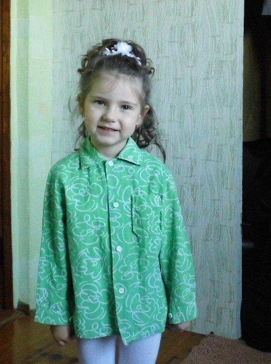
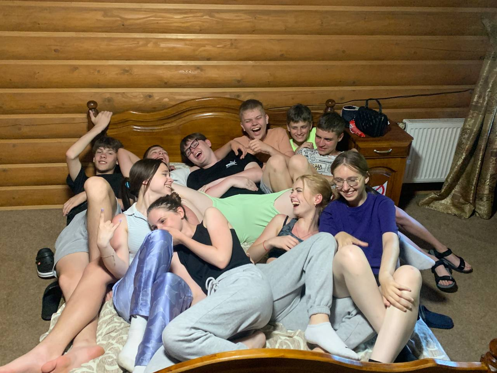
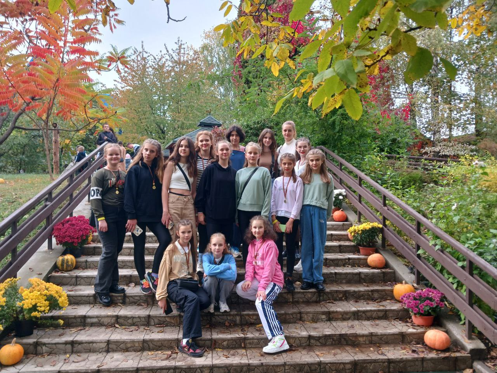
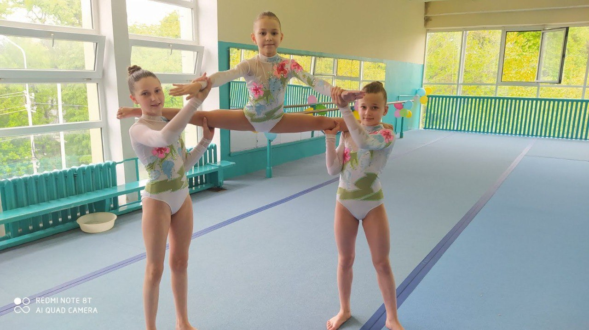
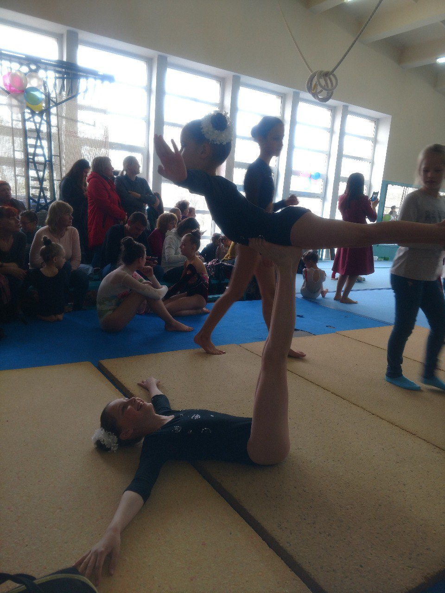
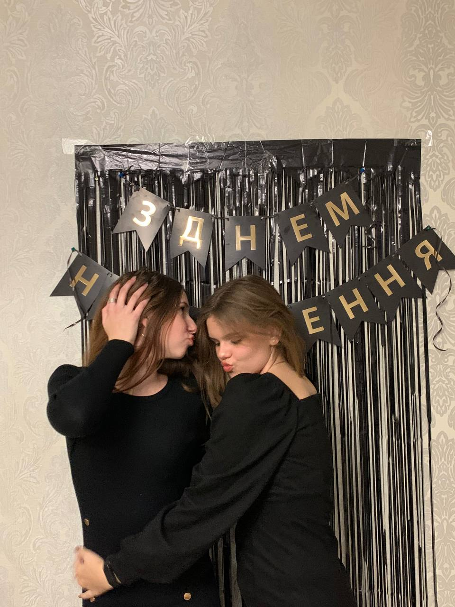
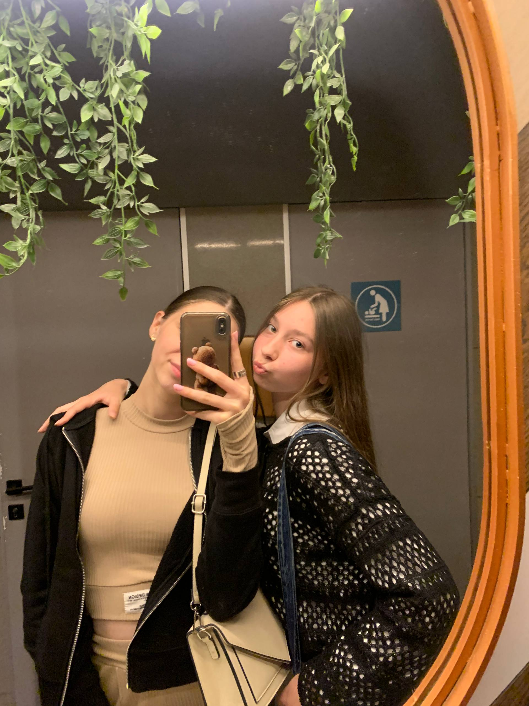
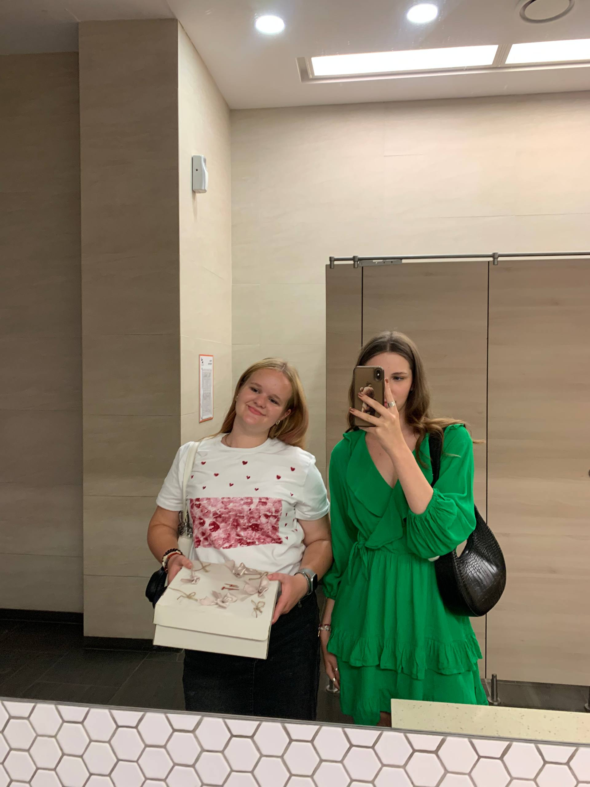
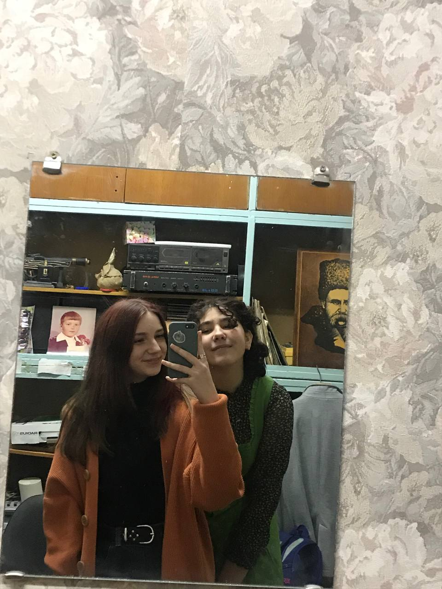

Моя історія розпочинається 5 березня 2009 року. Я з’явилася на світ у звичайний день, який для моїх рідних став особливим. З дитинства я росла допитливою, активною та мрійливою дитиною. Мені завжди хотілося пізнавати світ навколо себе — від маленьких дрібниць до великих відкриттів. Я швидко знаходила спільну мову з людьми, любила сміятися та створювати атмосферу тепла поруч із собою. Мої перші спогади — це найщасливіші моменти дитинства: ігри з друзями, сімейні свята та безтурботні дні, які, здавалося, ніколи не закінчаться. Саме в ті роки я навчилася цінувати прості речі, мріяти по-справжньому та вірити в те, що все можливе.
Я навчалась у двох школах: перша дала мені базу та перші дружби, а друга стала місцем, де я дорослішала й відкривала свої інтереси. Танці завжди були моєю окремою історією — я танцювала вальс, ходила на заняття при школі та постійно їздила на конкурси. Репетиції, сцена, музика — усе це стало важливою частиною мого шкільного життя, і без танців я навряд чи була б такою, якою є зараз.
 Коледж став для мене новим етапом, де я навчаюся на комп’ютерній інженерії й зараз уже на другому курсі. Навчання йде своїм темпом, а поруч — хороші одногрупники, з якими легко знайти спільну мову. За цей час я знайшла багато друзів, і саме люди зробили мої коледжні будні теплішими. Окрім занять, я ходила на танці разом із одногрупницями та дизайнерами, а інколи навіть сама ставила танці. Це додавало нашому навчальному життю руху, сміху та спільних моментів, які хочеться пам’ятати.
Спортивна акробатика була великою частиною мого життя. Я займалася нею майже п’ять років, проходячи через тренування, виступи та маленькі перемоги, які вчили мене наполегливості. Спочатку я виступала в жіночій парі, а згодом — у жіночій трійці, де кожен елемент залежав не тільки від мене, а й від довіри між нами. Я мала мрії вирости до звання майстра спорту та рухалася до цього крок за кроком, але життя інколи приводить до рішень, яких не плануєш. Так сталося, що я залишила акробатику, проте всі ті роки тренувань досі залишаються для мене важливим досвідом, який сформував характер, силу й любов до спорту.
 Моя сестра – моя перша порада та супергерой у спільних пригодах.
Моїх найближчих подруг можна описати коротко і ясно.
Влада — моя тиха опора. З нею легко мовчати й просто бути. Вона з тих людей, хто завжди поруч, навіть коли далеко.
Ліза — сміх мого життя. Там, де вона, завжди світліше. Вміє перетворити будь-який день на свято.
Злата — мудрість у простих словах. Вона каже небагато, але завжди точне. Її поради — як компас, який рідко помиляється.
Даля — рух і натхнення. Вона вміє запалювати ідеями й тягнути у світ нового. Поруч із нею хочеться жити сміливіше.
